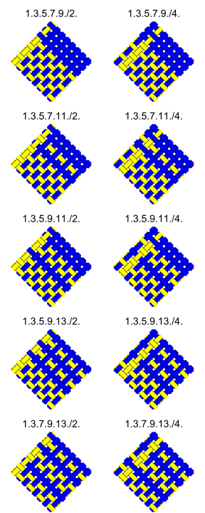

The 406 Naiki patterns
A supplement to Monsters in the Hollow: Counting Naiki braid patterns using de Bruijn's Monster Theorem ***link***
***Monsters in the Hollow*** counts the number of two-color Naiki braid patterns with equivalence given by rotation around the axis, translation along the axis, 180° rotation perpendicular to the axis, glide plane reflection parallel to the axis, and exchange of colors. Table 2 from the ***paper***, reproduced below, divides these according to how many even-numbered threads were of each color and how many odd-numbered threads had each color.
Table 2: Inventory of patterns given by the Monster Theorem
| even | thread | spots | |||||
|---|---|---|---|---|---|---|---|
| 0 | 4 | 8 | 12 | 16 | |||
| 0 | 1 | ||||||
| 4 | 1 | 1 | |||||
| 8 | 4 | 6 | 12 | ||||
| odd | 12 | 5 | 10 | 34 | 29 | ||
| thread | 16 | 8 | 13 | 52 | 79 | 48 | |
| spots | 20 | 5 | 10 | 34 | 29 | ||
| 24 | 4 | 6 | 12 | ||||
| 28 | 1 | 1 | |||||
| 32 | 1 |
Note that this triangular table should really be regarded as a quarter of a square table, "folded" by equivalence relations. For example, the braids with more even spots than odd spots can be obtained by glide plane reflecting the braids in the table. Similarly, the braids with more than 32 spots total can be obtained by exchanging colors of the braids in the table and their glide plane reflections.
In order to make a complete list of the patterns in Table 2, we start by considering the odd threads and the even threads separately. We start by representing each set of 8 threads with a binary "bracelet" of length 8. A bracelet is a string of digits, with two bracelets considered equivalent if one can be transformed into the other by cyclic shifts and/or mirror images. The complete list of such bracelets can be obtained from, for example, the Combinatorial Object Server. Each 1 in the bracelet will represent a thread which produces 4 spots in the pattern. A Naiki pattern with 4m odd spots and 4n even spots can be produced by combining a bracelet with m 1's and a bracelet with n 1's. There are, however, some subtleties induced by the symmetries of the bracelets interacting with the symmetries of the braid.
Firstly, note that the bracelets have the symmetry of the dihedral group, as noted in my paper on Kongo Gumi braids. ***link*** The full symmetry group includes cyclic shifts and mirror images. In particular, the mirror images can have two fixed points or no fixed points. A mirror with fixed points combined with a shift of 1 gives a mirror without fixed points, and vice versa. Looking at the symmetries of the braid in terms of the bracelets, we see that they are generated by the following:
- a simultaneous cyclic shift of each bracelet by 1,
- a cyclic shift of either bracelet individually by 2,
- a simultaneous mirror image of both bracelets with no fixed points, and
- swapping the two bracelets, following by a cyclic shift of either bracelet individually by 1.
In order to generate all braids with 4m odd spots and
4n even spots, we match each bracelet with m 1's
("odd bracelet")
with each bracelet with n 1's ("even bracelet"), with the
following additions and exceptions:
(For simplicity of the table, we will assume the
additions are made to the even bracelets; this is
an arbitrary choice.)
- Addition: If m ≠ n and m ≠ 8 - n, each even bracelet needs to be used in two different positions separated by a shift of 1, except in the cases where one bracelet has a mirror with fixed points and the other bracelet has a mirror without fixed points. In this case the two mirrors and the extra shift combine to give a symmetry of the braid, so the second position of the even bracelet does not produce a new braid.
- Exception: If m = n or m = 8 - n , the shift is described in the previous point is not necessary, because swapping the two bracelets is equivalent to shifting one of them. Since each bracelet is used as both an odd bracelet and an even bracelet (up to exchanging colors), every pair is swapped. However, the above note about combining mirrors with and without fixed points still apply, so some combinations will not appear in the table.
- Addition: If an even bracelet with no mirrors is combined with an odd bracelet with no mirrors, the even bracelet has to be used in each of its mirror orientations. In any other cases this is not necessary, since mirroring both bracelets produces a symmetry of the braid up to a possible shift of one, which is covered above. If either bracelet has mirror symmetry, then mirroring the other will produce a braid equivalent to one already covered.
- Exception: If m = n = 8, some pairs of bracelets are equivalent up to exchanging colors, whereas some are equivalent to themselves. When a bracelet equivalent to itself is combined with one which is not, then the color-changed version of the second bracelet does not have to be used, since exchanging the colors of both bracelets produces an equivalent braid. In the particular case of bracelets with 8 0's and 8 1's, there is only one pair of bracelets which are not equivalent to themselves up to exchanging colors. Therefore one even bracelet may be omitted, and one odd bracelet will only appear where it is combined with its color-changed version.
Table 3: Diagrams of all of the patterns from Table 2
| 0 odd, 0 even: 1 pattern | ||||
| 4 odd, 0 even: 1 pattern | 4 odd, 4 even: 1 pattern | |||
 |
||||
8 odd, 0 even: 4 patterns |
8 odd, 4 even: 6 patterns (a) |
8 odd, 8 even: 12 patterns (b) |
||
 |
|
|||
12 odd, 0 even: 5 patterns |
12 odd, 4 even: 10 patterns |
12 odd, 8 even: 34 patterns (a) |
12 odd, 12 even: 29 patterns (b, c) |
|
 |
 |
 |
||
16 odd, 0 even: 8 patterns |
16 odd, 4 even: 13 patterns |
16 odd, 8 even: 52 patterns (a) |
16 odd, 12 even: 79 patterns (b, c) |
16 odd, 16 even: 48 patterns (b, c, d) |
 |
 |
 |
 |
|
20 odd, 0 even: 5 patterns |
20 odd, 4 even: 10 patterns |
20 odd, 8 even: 34 patterns (a) |
20 odd, 12 even: 29 patterns (b, c) |
|
|  |
|
|||
24 odd, 0 even: 4 patterns |
24 odd, 4 even: 6 patterns (a) |
24 odd, 8 even: 12 patterns (b) |
||
 |
 |
|||
| 28 odd, 0 even: 1 pattern | 28 odd, 4 even: 1 pattern | |||
 |
||||
| 32 odd, 0 even: 1 pattern | ||||